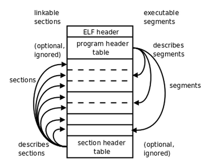

一、总前言
操作系统是一门重课，我并不知晓自己是否做好了准备。“在这样的情况下就开始写文章，是否太着急了？” 我这样想，不知道对这门课自己是否有写文章的水平，也不知道自己是否会半途而废。
但我还是决定开始，并不是因为有什么十足的信心，而是希望这一系列文章能帮助自己更深入的理解操作系统的知识，在讲解的过程中发现自己的不足。我希望这系列能持续下去，希望未来的自己看到结果时能够满意；希望他人也能从中得到收获。
二、进入操作系统
（1）操作系统的启动
操作系统的 boot 过程是一个复杂繁琐的过程，从 bios 从上电后的启动地址开始执行，初始化硬件，读取磁盘的主引导记录，跳转到 bootloader；到加载内核程序，跳转到操作系统入口。这一整个过程难以详述……
不过幸好在本实验中，这些都不是问题，因为我们所使用的 GXemul 模拟器不会去执行上述环节，它可以直接加载 ELF 格式内核。也就是说，我们的操作系统实验是从跳转到操作系统入口开始的。
（2）内核的入口和内存布局
所以，哪里是操作系统入口？内核入口的设置在 kernel.lds 中，这是一个链接器脚本，用于帮助链接器确定最终生成的文件的组织形式。
我们看一下该文件的开头。
/*
* Set the architecture to mips.
*/
OUTPUT_ARCH(mips)
/*
* Set the ENTRY point of the program to _start.
*/
ENTRY(_start)
其中 OUTPUT_ARCH(mips) 设置了最终生成的文件采用的架构，对于 MOS 来说就是 mips。而 ENTRY(_start) 便设置了程序的入口函数。因此 MOS 内核的入口即 _start。这是一个符号，对应的是 init/start.S 中的
.text
EXPORT(_start)
.set at
.set reorder
/* disable interrupts */
mtc0 zero, CP0_STATUS
/* omit... */
EXPORT 是一个宏，该宏将符号设置为全局符号，这样才对链接器可见。
#define EXPORT(symbol) \
.globl symbol; \
symbol:
现在让我们回到 kernel.lds，原来其中还定义了其他内容。
SECTIONS {
/* Exercise 3.10: Your code here. */
/* fill in the correct address of the key sections: text, data, bss. */
/* Exercise 1.2: Your code here. */
. = 0x80010000;
.text : { *(.text) }
.data : { *(.data) }
.bss : { *(.bss) }
bss_end = .;
. = 0x80400000;
end = . ;
}
这一部分是用来设置程序中的段位置的，它将.text .data .bss 段设置在以 0x8001 0000 为开始的地址空间中。另外它还设置了 bss_end 和 end 符号的地址，这将在之后的实验中起作用。
这些设置的依据是什么呢？实际上只是人为的规定。在裸机上，我们事先规定好了不同区域的内存用于何种功能。内存布局图可在 include/mmu.h 中找到
/*
o 4G -----------> +----------------------------+------------0x100000000
o | ... | kseg2
o KSEG2 -----> +----------------------------+------------0xc000 0000
o | Devices | kseg1
o KSEG1 -----> +----------------------------+------------0xa000 0000
o | Invalid Memory | /|\
o +----------------------------+----|-------Physical Memory Max
o | ... | kseg0
o KSTACKTOP-----> +----------------------------+----|-------0x8040 0000-------end
o | Kernel Stack | | KSTKSIZE /|\
o +----------------------------+----|------ |
o | Kernel Text | | PDMAP
o KERNBASE -----> +----------------------------+----|-------0x8001 0000 |
o | Exception Entry | \|/ \|/
o ULIM -----> +----------------------------+------------0x8000 0000-------
o | User VPT | PDMAP /|\
o UVPT -----> +----------------------------+------------0x7fc0 0000 |
o | pages | PDMAP |
o UPAGES -----> +----------------------------+------------0x7f80 0000 |
o | envs | PDMAP |
o UTOP,UENVS -----> +----------------------------+------------0x7f40 0000 |
o UXSTACKTOP -/ | user exception stack | BY2PG |
o +----------------------------+------------0x7f3f f000 |
o | | BY2PG |
o USTACKTOP ----> +----------------------------+------------0x7f3f e000 |
o | normal user stack | BY2PG |
o +----------------------------+------------0x7f3f d000 |
a | | |
a ~~~~~~~~~~~~~~~~~~~~~~~~~~~~~~ |
a . . |
a . . kuseg
a . . |
a |~~~~~~~~~~~~~~~~~~~~~~~~~~~~| |
a | | |
o UTEXT -----> +----------------------------+------------0x0040 0000 |
o | reserved for COW | BY2PG |
o UCOW -----> +----------------------------+------------0x003f f000 |
o | reversed for temporary | BY2PG |
o UTEMP -----> +----------------------------+------------0x003f e000 |
o | invalid memory | \|/
a 0 ------------> +----------------------------+ ----------------------------
o
*/
同时在该头文件中，还定义了一些和内存相关的宏常量和宏函数。在本次实验中用到的有
#define KSTACKTOP (ULIM + PDMAP)
三、内核初始化
现在我们已经进入到 _start 函数中了。这一部分内容不多。在 init/start.S 中只有这些内容。
.text
EXPORT(_start)
.set at
.set reorder
/* disable interrupts */
mtc0 zero, CP0_STATUS
/* hint: you can reference the memory layout in include/mmu.h */
/* set up the kernel stack */
/* Exercise 1.3: Your code here. (1/2) */
la sp, KSTACKTOP
/* jump to mips_init */
/* Exercise 1.3: Yoiur code here. (2/2) */
j mips_init
.text 表示一下内容都是可执行的汇编指令。.set at 设置允许汇编器使用 at 寄存器。.set reorder 设置允许汇编器进行指令重排。mtc0 zero, CP0_STATUS 正如注释所言，停用了中断。这些并不重要。
更重要的是本实验中需要填写的部分。首先，我们需要初始化 sp 寄存器的地址。sp 用于实现栈帧，是完成函数调用的基础。通过查看内存布局图，我们可以得知内核的栈处在 0x8040 0000 以下的位置。
可是，我们不应该将 sp 初始化到栈底所在的位置吗？为什么加载地址所用的符号名称为 KSTACKTOP？这是因为 sp 是低地址增长的，所以其栈底地址就在“顶”了。
另外还需要注意一点，这里只能使用 la 指令设置地址。因为 0x8040 0000 数值超出了立即数所能表达的范围，不能使用 lui、li 等指令。
最后，j mips_init 是一条跳转语句，跳转到的符号是一个 c 语言函数，定义在 init/init.c 中。记得第一次看到 c 语言和汇编相互调用的时候，感到十分惊奇。
void mips_init() {
printk("init.c:\tmips_init() is called\n");
/* omit... */
}
这个函数在本实验中几乎毫无内容，因此本实验中内核的程序便到此为止了。
最后还需要说明一点，跳转到 mips_init 使用的是 j 而非 jal。这是因为按照操作系统的设计，根本不存在 mips_init 函数返回的情况。
四、printk 的实现
GXemul 的调试只有汇编码，打桩调试又成了大多数时候的手段。为此实验贴心地让我们在最开始就实现一个类 printf 函数（这当然是假的，主要目的是提供一个输出评测的方式）。
在 kern/printk.c 中有 printk 的定义
void printk(const char *fmt, ...) {
va_list ap;
va_start(ap, fmt);
vprintfmt(outputk, NULL, fmt, ap);
va_end(ap);
}
和 printf 一样，这是一个具有边长参数的函数。va_list ap 是变长参数列表。va_start 和 va_end 是用来初始化和结束变长参数列表的宏。真正重要的只有第三条语句 vprintfmt(outputk, NULL, fmt, ap);
值得注意的是这条语句的第一个参数。这是一个回调函数，其定义同在kern/printk.c。是一个输出字符串的函数。其中 printcharc 一定是一个输出单个字符的函数。
void outputk(void *data, const char *buf, size_t len) {
for (int i = 0; i < len; i++) {
printcharc(buf[i]);
}
}
更深入一层，在 kern/console.c 中有 printcharc 的定义，这样就完全到达底层了。输出字符本质上是向一个地址写入该字符所对应的数值。在同一个文件中还有读取字符的函数，是读取同一个地址的数值作为字符。
void printcharc(char ch) {
*((volatile char *)(KSEG1 + DEV_CONS_ADDRESS + DEV_CONS_PUTGETCHAR)) = ch;
}
让我们回到 printk。不，应该是进入到 vprintfmt。这个函数定义在 lib/print.c。是需要我们填空的函数。首先看到一些定义的变量。我们需要设置这些变量的数值。
void vprintfmt(fmt_callback_t out, void *data, const char *fmt, va_list ap) {
char c;
const char *s;
long num;
int width;
int long_flag; // output is long (rather than int)
int neg_flag; // output is negative
int ladjust; // output is left-aligned
char padc; // padding char
接着是一个循环，很明显是用来处理 fmt 字符串并按照格式进行输出的。这里我们翻一下指导书，可以找到格式的定义。
%[flags][width][length]<specifier>
在编写代码前仔细思考一下：
- flags 有三种情况，
-、0或没有 - width 只可能出现数字
- length 只有两种情况
l或没有。
我们很容易可以写出 for 循环中的代码。需要注意这里使用了回调函数 out 进行输出。
/* scan for the next '%' */
/* Exercise 1.4: Your code here. (1/8) */
const char * p = fmt;
while (*p != '%' && *p != '\0') {
p++;
}
/* flush the string found so far */
/* Exercise 1.4: Your code here. (2/8) */
out(data, fmt, p - fmt);
fmt = p;
/* check "are we hitting the end?" */
/* Exercise 1.4: Your code here. (3/8) */
if (*fmt == '\0') {
break;
}
/* we found a '%' */
/* Exercise 1.4: Your code here. (4/8) */
fmt++;
/* check format flag */
/* Exercise 1.4: Your code here. (5/8) */
ladjust = 0;
padc = ' ';
if (*fmt == '-') {
ladjust = 1;
fmt++;
} else if (*fmt == '0') {
padc = '0';
fmt++;
}
/* get width */
/* Exercise 1.4: Your code here. (6/8) */
width = 0;
while ('0' <= *fmt && *fmt <= '9' && *fmt != '\0') {
width *= 10;
width += *fmt - '0';
fmt++;
}
/* check for long */
/* Exercise 1.4: Your code here. (7/8) */
long_flag = 0;
if (*fmt == 'l') {
long_flag = 1;
fmt++;
}
之后根据 specifier 判断输出类型。不同的输出类型有不同的函数。感兴趣的可以深入研究。算法比较基本。
最后还有一个输出 %d 类型的部分需要填写。唯一有不同的地方是需要根据正负号设置 print_num 的 neg_flag 参数。
五、编写 readelf 工具
本实验的还有一个和内核关系不大的内容，需要自己编写一个读取 elf 文件头的工具。该程序的相关代码在 tools/readelf 文件夹中。
程序的入口在 tools/readelf/main.c 文件中。main 函数首先判断参数是否合法，随后
- 打开文件
- 获取文件大小
- 将文件内容读取到内存中
- 调用
readelf函数进行处理
int main(int argc, char *argv[]) {
if (argc < 2) {
fprintf(stderr, "Usage: %s <elf-file>\n", argv[0]);
return 1;
}
FILE *fp = fopen(argv[1], "rb");
if (fp == NULL) {
perror(argv[1]);
return 1;
}
if (fseek(fp, 0, SEEK_END)) {
perror("fseek");
goto err;
}
int fsize = ftell(fp);
if (fsize < 0) {
perror("ftell");
goto err;
}
char *p = malloc(fsize + 1);
if (p == NULL) {
perror("malloc");
goto err;
}
if (fseek(fp, 0, SEEK_SET)) {
perror("fseek");
goto err;
}
if (fread(p, fsize, 1, fp) < 0) {
perror("fread");
goto err;
}
p[fsize] = 0;
return readelf(p, fsize);
err:
fclose(fp);
return 1;
}
值得注意的是异常处理使用到了 goto 语句。
readelf 函数是功能的主要实现函数，也是我们需要补全的部分。首先，将传入的 binary 指针转换为 elf 格式结构体的指针。c 语言中通过结构体实现二进制内容的划分。
int readelf(const void *binary, size_t size) {
Elf32_Ehdr *ehdr = (Elf32_Ehdr *)binary;
随后判断文件是否是 elf 格式。
// Check whether `binary` is a ELF file.
if (!is_elf_format(binary, size)) {
fputs("not an elf file\n", stderr);
return -1;
}
其中 is_elf_format 函数通过文件大小和魔数来进行判断
int is_elf_format(const void *binary, size_t size) {
Elf32_Ehdr *ehdr = (Elf32_Ehdr *)binary;
return size >= sizeof(Elf32_Ehdr) && ehdr->e_ident[EI_MAG0] == ELFMAG0 &&
ehdr->e_ident[EI_MAG1] == ELFMAG1 && ehdr->e_ident[EI_MAG2] == ELFMAG2 &&
ehdr->e_ident[EI_MAG3] == ELFMAG3;
}
回到 readelf 函数，我们希望读取节表（section table）的内容。首先要确定节表的位置、节表头的数量和大小。Elf32_Ehdr 结构体中有 e_shoff 用来记录节表位置相对于 elf 整体地址的偏移量。另有 e_shnum、e_shentsize 分别表示节表的数量和大小。
// Get the address of the section table, the number of section headers and the size of a
// section header.
const void *sh_table;
Elf32_Half sh_entry_count;
Elf32_Half sh_entry_size;
/* Exercise 1.1: Your code here. (1/2) */
sh_table = binary + ehdr->e_shoff;
sh_entry_count = ehdr->e_shnum;
sh_entry_size = ehdr->e_shentsize;
之后我们遍历所有的节表，每个节表头的地址由节表头地址加上多个节表头的大小得到 sh_table + i * sh_entry_size。我们将其转化为节表头结构体的指针，获取该节表头所对应的节的地址 addr = shdr->sh_addr。最后输出结果。
// For each section header, output its index and the section address.
// The index should start from 0.
for (int i = 0; i < sh_entry_count; i++) {
const Elf32_Shdr *shdr;
unsigned int addr;
/* Exercise 1.1: Your code here. (2/2) */
shdr = (Elf32_Shdr*)(sh_table + i * sh_entry_size);
addr = shdr->sh_addr;
printf("%d:0x%x\n", i, addr);
}
return 0;
}
在其中唯一需要明确的是，节表存储了节的相关信息，但并不是节本身。如下的图片就很好地说明了节表和节的关系。节是文件中间的部分，而节表的位置则在文件的最后，section header table 的位置。程序表的内容也与节表类似。
